01민감하게 느끼면서도 입력합니다
ChatGPT 사용자 300명 중 82%는 AI와 나눈 대화를 민감하다고 평가했지만,
절반 가까이는 건강 이야기를, 3분의 1 이상은 돈 문제를
AI와 나눈 적이 있었습니다.

AI에 질문을 쓰다 보면 이름이나 회사 이름 같은 개인정보가 함께 들어갑니다. 보내기 전에 개인정보를 확인하고, 처리 방법을 직접 고를 수 있는 기능을 기획했습니다.
개인정보 보호 ON01Overview
AI에 질문을 쓰다 보면 이름, 연락처, 회사 이름 같은 개인정보가 함께 들어갑니다.
사용자는 불안해하면서도, 더 정확한 답을 얻기 위해 결국 이 정보를 입력합니다.
하지만 AI는 어떤 정보가 들어갔는지, 어떻게 쓰이는지 알려 주지 않아 혼자 판단해야 합니다.
그래서 보내기 전에 개인정보를 찾아 보여 주고, 처리 방법은 사용자가 직접 고르게 했습니다.
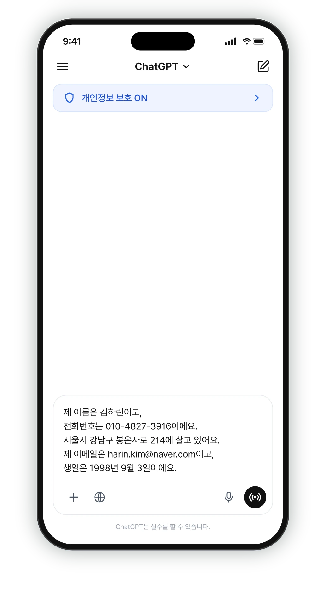
글 속 개인정보를 찾아 표시합니다.
개인정보를 그대로 두거나, 가리거나,
다른 이름으로 바꿀 수 있습니다.
보내기 전에 원래 글과 바뀐 글을 비교합니다.
Process · Double Diamond
02Discover · Secondary Research
AI에 개인정보를 입력할 때 사용자가 무엇을 걱정하는지,
관련 연구와 리포트, 사용자 리뷰로 먼저 살펴봤습니다.
ChatGPT 사용자 300명 중 82%는 AI와 나눈 대화를 민감하다고 평가했지만,
절반 가까이는 건강 이야기를, 3분의 1 이상은 돈 문제를
AI와 나눈 적이 있었습니다.
안내를 보여주는 때와 방식은 이해에 영향을 줍니다.
선택지가 너무 많거나 복잡하면 무엇을 골라야 할지 어렵습니다.
입력한 글에서 개인정보를 찾아 가리거나 바꾸는 확장 프로그램,
AI 사용 중 보호 방법을 제안하는 기능이 연구됐습니다.
제 이름은 김민수 사용자이고, 번호는 010-****-5678이에요.
회사 이름이 들어 있어요. 어떻게 할까요?
가리기다른 이름그대로02Discover · Primary Research
사용자들이 불안해하면서도 왜 AI에 개인정보를 입력하는지, 어느 정도까지 입력하는지,
어떤 가이드가 필요한지 알아보기 위해 1:1 인터뷰로 정성 분석을 진행했습니다.
어디까지 입력하는지, 걱정될 때 어떻게 하는지, 어떤 가이드가 필요한지 물었습니다.

인터뷰지 구성 주제별 대표 질문
기존 연구의 질문을 참고해 공통 질문 26개와 참여자별 질문을 만들었습니다.
Themes
03Define · Affinity Mapping
인터뷰 원문을 한 가지 뜻만 담긴 문장으로 쪼개 포스트잇 916장으로 만들고, 비슷한 내용끼리 하위 그룹 27개, 상위 그룹 6개로 묶었습니다.
포스트잇마다 참여자 ID와 질문 번호를 달아 언제든 원문으로 돌아갈 수 있게 했고, 여기서 이번 프로젝트에서 해결할 문제를 찾았습니다.
Offline → Digital
벽에서 손으로 옮기며 묶고,
피그잼에서 916장으로 다시 정리했습니다.
인터뷰 원문을 다시 읽으며 포스트잇을 옮기고 그룹 경계를 조정한 뒤,
피그잼 보드로 옮겨 참여자 ID와 질문 번호를 달았습니다.
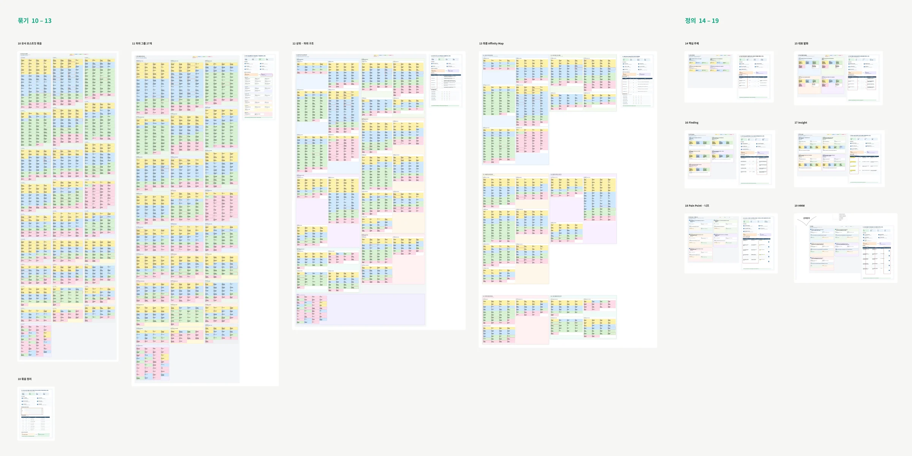
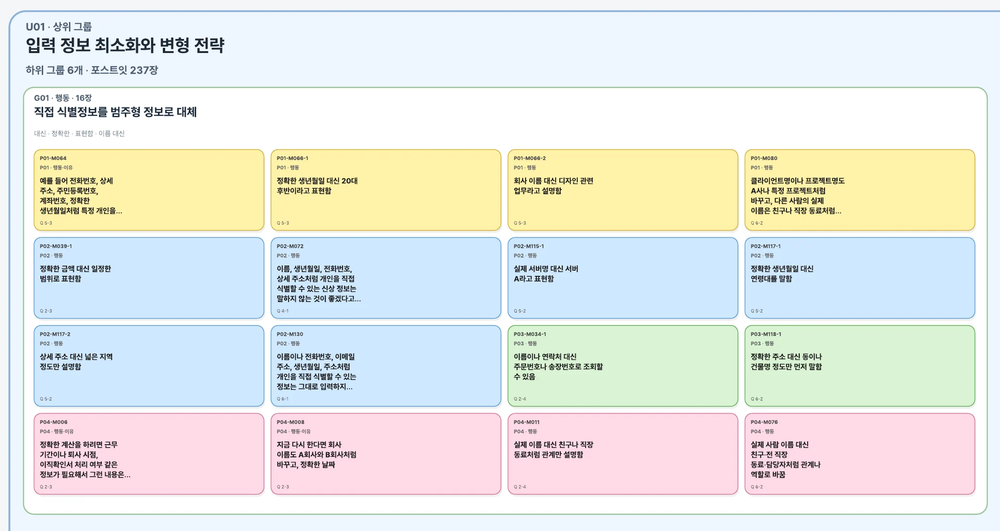
1234상위 그룹 6개 · 하위 그룹 27개
숫자는 그룹에 들어간 포스트잇 수입니다. 공통 의미가 분명하지 않은 39장은 보류로 따로 뒀습니다.
U01 · 상위 그룹
237장 · 하위 그룹 6개
U02 · 상위 그룹
122장 · 하위 그룹 4개
U03 · 상위 그룹
235장 · 하위 그룹 7개
U04 · 상위 그룹
118장 · 하위 그룹 3개
U05 · 상위 그룹
83장 · 하위 그룹 3개
U06 · 상위 그룹
82장 · 하위 그룹 4개
핵심 주제별 대표 발화
핵심 주제마다 참여자의 실제 발화를 골라 원문 ID와 함께 남겼습니다. 그중 디자인으로 바로 이어진 두 가지입니다.
T03핵심 불안은 유출·악용·통제 불가능성에 집중된다
“결국 자기 보호 행동은 처음부터 자연스럽게 한 것이 아니라, AI가 제 정보를 실제 답변에 반복적으로 반영하는 것을 본 경험과 정보보안 업무에서 접한 위험 사례가 함께 영향을 주면서 …”
P02 · 정보보안 종사자P02-150 · Q6-2
T04세밀한 제어권과 입력 맥락형 프라이버시 안내를 원한다
“예를 들어 이름에는 “개인 식별 정보일 수 있습니다”, 전화번호에는 “연락처 정보가 포함되어 있습니다”라고 간단하게 이유를 …”
P01 · 디자이너P01-183 · Q9-2
Key Insights
리서치 문서의 Insight 5개(I01~I05)를 같은 Pain Point로 이어지는 것끼리 묶어 3개로 정리했습니다.
무엇을 남기거나 바꿀지
매번 혼자 정해야 합니다.
정보를 줄이면 답변이
덜 정확해질까 걱정됩니다.
정보가 저장되거나 AI 학습에
쓰이는지 알기 어렵습니다.
AI가 기억하는 정보를
확인하거나 바꾸기 어렵습니다.
글을 쓰고 보낼 때 필요한
안내와 선택이 부족합니다.
03Define · Persona & User Journey
인터뷰에서 나온 경험을 모아 만든 가상의 인물입니다.
“편리함을 얻는 대신 개인정보에 대한 통제력을 일부 잃는 느낌이라고 생각합니다.”— P01 인터뷰 중
대표 상황실업급여를 알아보려고 근무 기간과 퇴사 시점을 AI에 입력했습니다. 질문에 집중하다 회사 이름까지 적었고,
보낸 뒤에야 너무 자세히 쓴 것 같아 마음에 걸렸습니다. 대화 기록을 지우면 정보도 없어지는지 몰라 기록을 그대로 둔 채
AI를 계속 사용했습니다.
· 정확한 답을 빨리 얻고 싶다
· 개인정보 노출을 줄이고 싶다
· 상황을 자세히 설명한다
· 이름·회사 이름을 바꿔 적는다
· 어디까지 적을지 망설인다
· 보낸 뒤가 불안하다
User Journey
개인정보도 함께 적을 수 있다는 점을 놓칩니다.
회사 이름 같은 정보도 함께 적을 수 있습니다.
무엇을 바꿀지 혼자 정해야 합니다.
글에 개인정보가 있는지 알려주기
글 속 개인정보 찾아 표시하기
처리 방법을 고르고 바뀐 글 확인하기
03Define · Problem & HMW
AI 사용자는 질문을 쓸 때 어떤 개인정보를 남기거나 바꿀지
혼자 정해야 하고, 보내기 전에 확인하고 고를 안내도 부족합니다.
PP01PP03
PP01PP03
PP05
이번 질문을 저장하거나 AI 학습·기억에 사용할지 직접 정할 수 있을까?
PP02PP04PP05이번 프로젝트는 보내기 전에 개인정보를 확인하고 처리하는 데 집중했습니다. 그래서 HMW1~3을 우선했고, 저장·학습·기억 설정을 다루는 HMW4는 이후 과제로 남겼습니다.
어떻게 하면 사용자가 보내기 전에글 속 개인정보를 확인하고, 처리 방법을 고른 뒤바뀐 내용을 확인할 수 있을까요?
04Develop
여러 해결 방법을 손으로 그려보고, 중요도와 구현 용이성으로 우선순위를 따져 주요 기능을 골랐습니다.
Value Proposition Canvas
가치제안 캔버스에서는 사용자가 AI를 사용할 때 하는 일과 불편한 점, 바라는 점을 정리하고 이를 서비스 기능과 연결했습니다.
사용자는 AI에게 필요한 상황을 설명하고 개인정보 처리 방법을 고르고 싶어 합니다. 하지만 어떤 정보를 지울지 혼자 판단해야 하고, 정보를 가리면 질문의 뜻이 달라질까 걱정합니다.
이를 돕기 위해 개인정보를 찾아 표시하고, 정보마다 처리 방법을 고른 뒤, 전송 전에 바뀐 결과를 확인하는 기능을 제안했습니다.
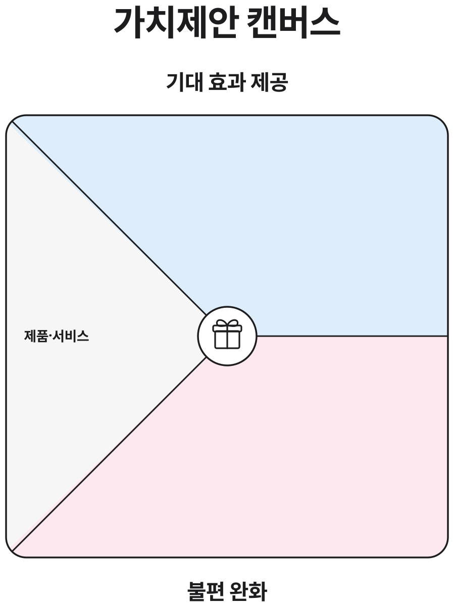
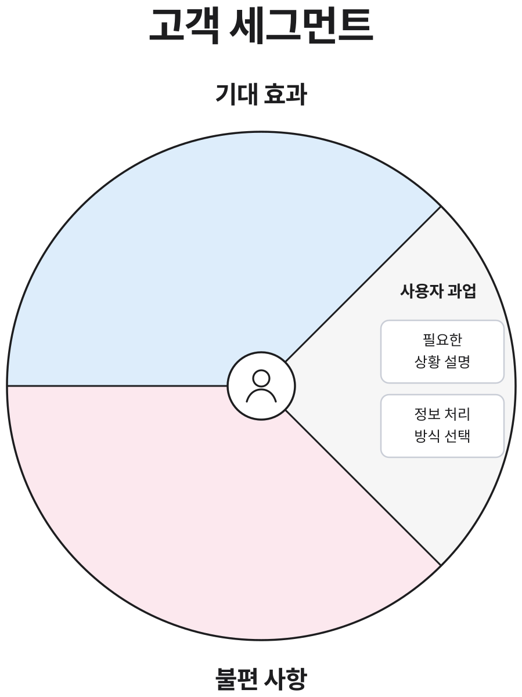
무엇을 지울지 혼자 판단해야 함
→개인정보 감지가리면 답변이 부족할까 걱정
→정보별 처리 선택전송 후 어떻게 쓰일지 불명확
→전송 전 결과 비교Crazy 8
아이디어를 정리하기 전에 ‘언제, 무엇을, 어떤 단위로 고르게 할까’ 같은 질문 8개를 먼저 정하고, 노트에 8컷씩 빠르게 그렸습니다.

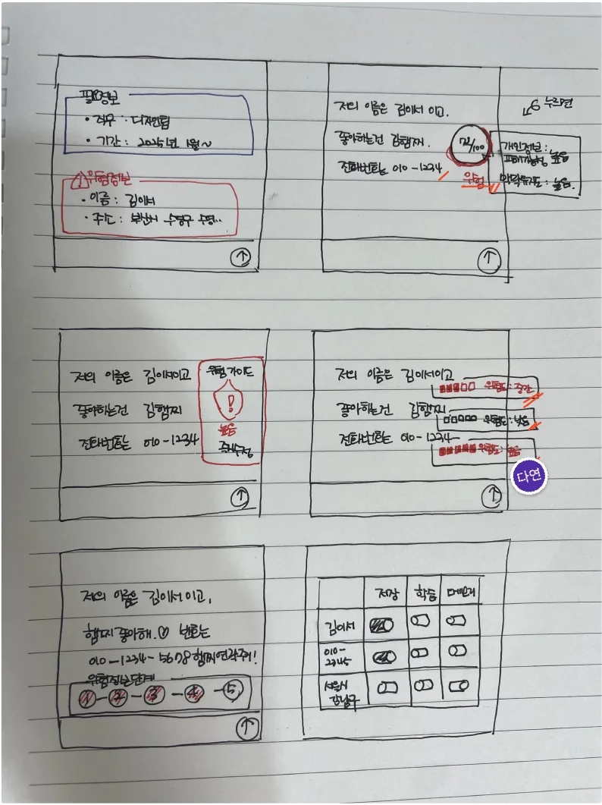
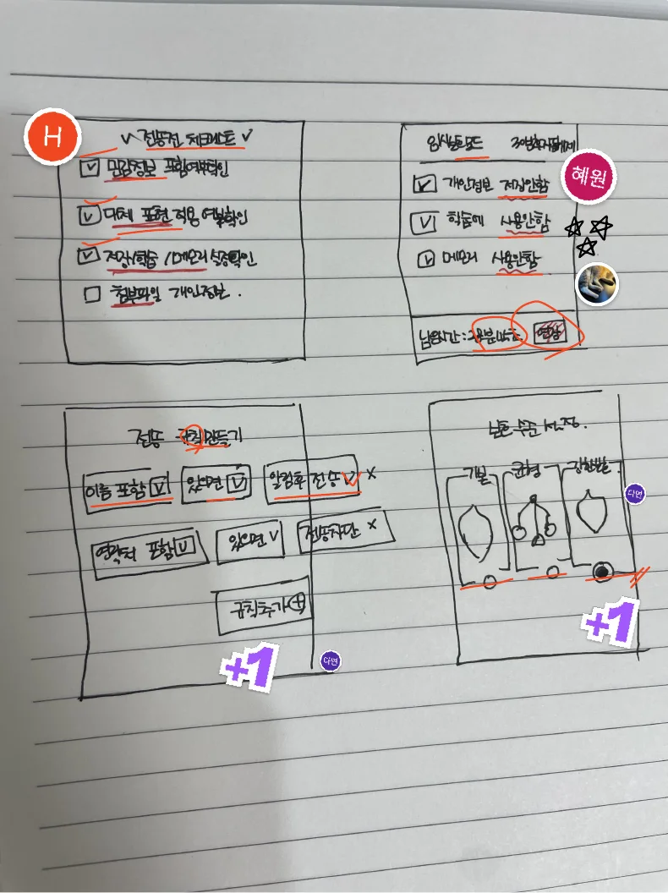

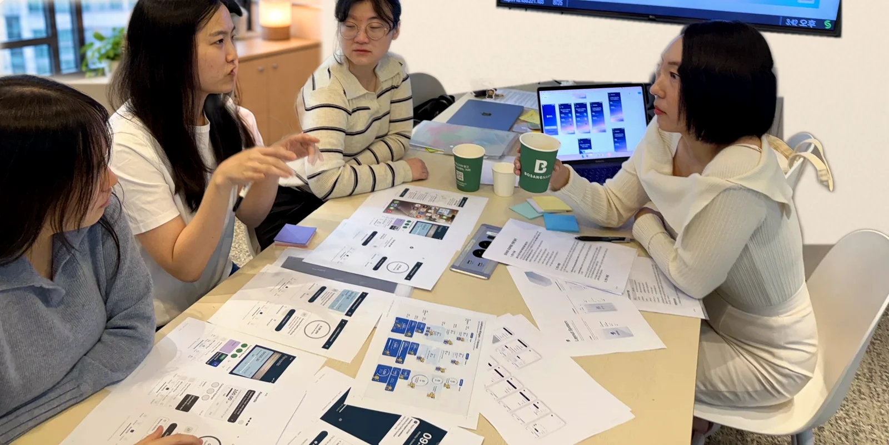
Idea Sketch
사용자의 흐름을 방해하지 않으면서, 필요한 순간에 직접 조절할 수 있는 방식을 기준으로 16개 아이디어를 발산했습니다.
01개인정보 자동 감지·하이라이트
02정보 사용 경고
03정보 항목별 처리 선택
04익명화 제안
05원본·보호처리 비교
06전송 전 위험 요약
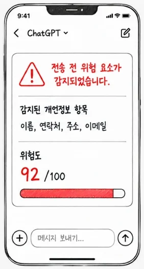
07개인정보·민감정보 구분
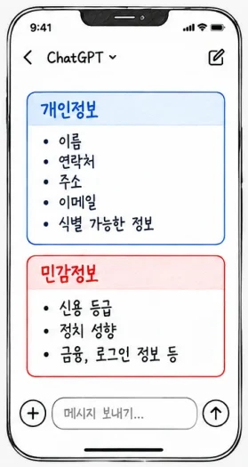
08입력 문장 위험도 표시
09위험 가이드
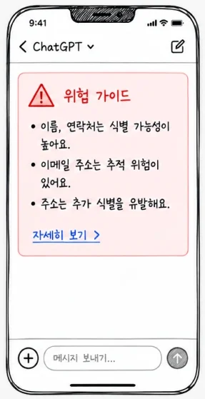
10민감어 감지·위험 표시
11실시간 보호 상태 바
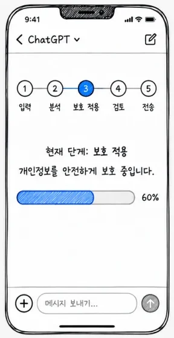
12데이터 설정
13전송 전 체크리스트
14일시 보호 모드
15정보별 세부 처리
16보호 수준 선택
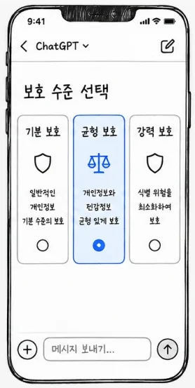
핵심 기능으로 먼저 검토
이후 확장 기능
Priority Matrix
X축 중요도·문제 해결력: 인터뷰 테마(가이드 부족 · 컨트롤 부족 · 직접 선택 니즈)를 얼마나 직접 해결하는지
Y축 구현 용이성: 지금의 채팅 화면 흐름을 크게 바꾸지 않고 붙일 수 있는지
우선 검토01개인정보 자동 감지·하이라이트03정보 항목별 처리 선택05원본·보호처리 비교06전송 전 위험 요약10민감어 감지·위험 표시
전략적 확장04익명화 제안15정보별 세부 처리
Final Flow
다음 세 가지 아이디어를 중심으로 발전시켰습니다.
질문에 개인정보가 있는지 찾아 표시합니다.
개인정보를 그대로 두거나, 가리거나, 다른 이름으로 바꿀 수 있습니다.
전송 전에 원래 문장과 바뀐 문장을 비교합니다.
※ 06 전송 전 위험 요약은 경고 중심이라 사용자가 직접 선택하는 방향과 맞지 않아 제외했습니다.
User Flow
질문을 보내기까지 사용자가 판단하는 지점(◇)을 기준으로 흐름을 나눴습니다. 초록 선은 사용자가 직접 고르는 길입니다.
Information Architecture
새 기능을 별도 설정 화면이 아니라, 기존 대화 화면의 배너·입력창·전송 단계 안에 붙였습니다.
Prototype
화면 11개를 한 흐름으로 이었습니다. 개인정보 감지(1-3)에서 ‘전체 가리기’와 ‘항목별 확인’ 두 갈래로 나뉩니다.
· 가리기 (권장) 이름을 ●●● 로 대체
· 유지 원본 그대로 전송
· 매번 자동으로 보기
· 처음 1회만 보기
· 개인정보가 감지될 때만 보기
· 직접 열 때만 보기
전송 버튼을 누르면 바로 보내지 않고, 글 속 이름·전화번호·이메일을 찾아 한눈에 보여 줍니다.
정보마다 별칭으로 바꾸거나 일부만 가리는 등 처리 방법을 직접 고르고 바로 적용합니다.
보내기 전에 원본과 보호 적용 결과를 나란히 보고, 필요한 내용이 남았는지 확인합니다.
05Deliver · Usability Testing
프로토타입을 5명에게 사용하게 하고, 과업 성공 여부와 쉽게 느낀 정도(SEQ), SUS를 기록했습니다.

What worked
5명 모두 도움 없이 성공했고,
평균 3.4초 만에 완료했습니다.
5명 모두 성공했고,
쉬움 점수는 평균 6.4점이었습니다.
원문과 변경 결과가 두 창으로 나뉘어 확인하기 쉽고, 색으로 정보를 구분한 점이 잘 보인다는 의견이 있었습니다.
Key findings
‘별칭’이라는 말을 낯설어했습니다.
‘별칭’을 ‘다른 이름’처럼 쉬운 말로 바꿉니다.
전체 가리기와 항목별 처리의 차이를 바로 이해하지 못했습니다.
(항목별 처리 1명 부분 성공)
두 기능이 각각 무엇을 하는지 짧게 설명합니다.
안내 문장이 길고 글자가 작다는 의견이 있었습니다.
긴 안내 문장을 줄이고, 작은 글자를 키웁니다.
Before & After
06Review
질문 속 개인정보를 찾아 보여주고, 정보마다 처리 방법을 고르는 화면을 제안했습니다.
대부분의 과업은 도움 없이 완료했고, 일부 표현과 안내·글자 크기는 더 쉽게 다듬을 필요를 확인했습니다.
Context
AI가 기억하는 정보와 대화 기록을 관리
AI가 기억하는 정보를 관리
질문을 보내기 전에 정보마다 처리 방법을 선택
공통점방식은 다르지만, 사용자가 AI에 제공하는 정보를 직접 조절할 수 있어야 한다는 문제를 다룹니다.
Limitations
참여자가 적고, 개인정보 민감도나 모집 조건이 고르지 않아 결과를 일반화하기 어렵습니다.
참여자를 늘리고, 개인정보 민감도에 따라 나눠 다시 검증합니다.
개인정보를 자동으로 정확하게 찾는지, 놓치거나 잘못 찾는지는 확인하지 않았습니다.
실제 질문 문장으로 놓친 정보와 잘못 찾은 정보를 측정합니다.
저장·학습 여부는 제어하지 않았고, 다른 사용자나 문화권의 반응은 확인하지 못했습니다.
AI 서비스의 저장·학습 설정과 연결하고, 더 다양한 사용자 환경에서 테스트합니다.
07Handoff · 개발 전달
화면마다 번호를 붙인 설명, 처리 규칙, 개발과 함께 정할 질문을 문서로 남겼습니다.
Storyboard
화면 11개를 한 장씩 정리했습니다. 위 탭에서 화면을 바꿔 볼 수 있습니다.
Rules
| 유형 | 원문 | 가리기 | 별칭으로 변경 | 유지 |
|---|---|---|---|---|
| 이름 | 김민수 | 김민* 확인 필요 | 사용자 등 직접 입력 | 원문 그대로 |
| 전화번호 | 010-1234-5678 | 010-****-5678 | 없음 | 원문 그대로 |
| 이메일 | minsu.kim@gmail.com | min**@gmail.com | 없음 | 원문 그대로 |
Open Questions
가리기 결과 표기가 화면마다 다릅니다. SCR 2-2 안내는 ●●●, SCR 1-4 결과는 김민*. 어느 형식으로 맞출까요?
SCR 1-2 예시 글에는 주소와 생년월일도 있는데, 감지는 이름·전화번호·이메일 3개입니다. 이번 범위에서 주소·생년월일은 제외할까요?
개인정보 감지를 기기 안에서 할지, 서버에서 할지 정해야 합니다. 서버라면 원문이 한 번은 전송됩니다.
‘다음부터 이 방식 사용’과 ‘기본값으로 저장’은 계정 단위로 저장할까요, 기기 단위로 저장할까요?